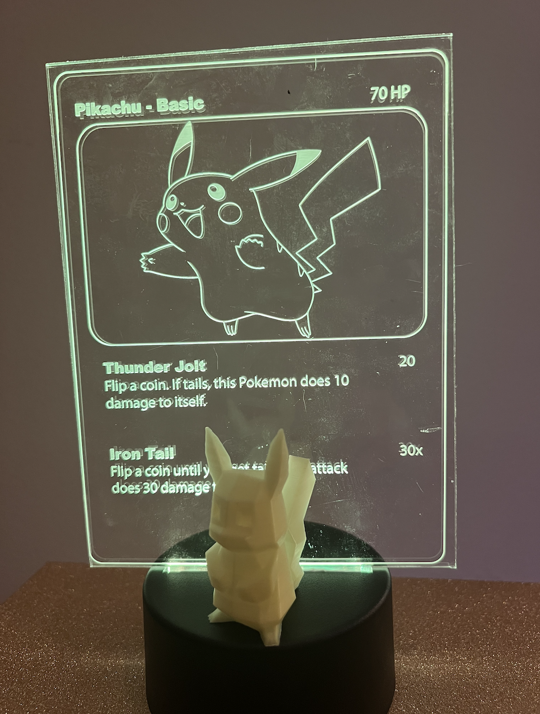

A recap on the concept:
[see also
final project proposal]
Ultimate Pokemon Starter Set: A starter set for the Pokemon enthusiast with a bit of flair! Great for office, bedroom, or game room displays!
Have all that you need to get a taste of the Pokemon world with the starter Pokemon (custom modified), a Pokeball (a representative object of your Pokemon’s home), and Pokemon cards to understand the traits and skills of your starter Pokemon.
Includes 3 parts:
- 1. Pokemon:
- Techniques: Rhino - mesh editing (1), 3D printing (2)
- Starter Pokemon STLs are custom modified with additional objects
- 2. Pokeball:
- Techniques: Mold design and casting (3), Rhino - direct modeling, 3D printing, Grasshopper (4)
- Casted Pokeball is painted and has a 3D printed stand
- 3. Pokemon cards (stretch goal):
- Techniques: Laser cutting (5), Stock parts (6)
- Decorative clear acrylic cards with stand are illuminated with LEDs
Final result:
I was able to achieve my stretch goal of the Pokemon cards and here is the final result!
This includes the 4 Pokemon, 1 Pokeball and stand, and 4 Pokemon card lamps.
Overview of Steps:
Pokemon:
Methods:
- Rhino mesh editing
- 3D printing
BOM:
- Pokemon STLs: Bulbasaur, Charmander, Squirtle, and Pikachu
- Object STLs: Rose, Fire, Squad Glasses
- Green, red, blue, and yellow PLAs
- 3D printer
- Glue stick, super glue, hot glue
How it was done:
- Ordered relevant PLA colors
- Downloaded starter Pokemon STLs (Squirtle, Bulbasaur, Charmander) + Pikachu from Thingiverse
- Downloaded STLs of objects: Rose, Fire, and Squad Glasses
- I discovered on Thingiverse that someone had already crafted the famous Squirtle ‘Squad’ Glasses as a remix that fits with the existing Squirtle.
- Rhino mesh editing, ensure scale and closed meshes -> export new STLs
- I combined the rose and the Bulbasaur by splitting off the current Bulbasaur plant and scaling, reducing the rose mesh, and unioning them together.
- [see also assignment 5 for bulbasaur beginnings]

- I applied a similar approach to the fire on the Charmander. I had to be careful when aligning the fire on Charmander’s tail, as unioning them resulted in an open mesh. I reduced the mesh and combined further down on the tail to ensure a closed mesh.
- I decided to keep the squad glasses as a separate object worn by Squirtle rather than unioning them to its face.
- In addition, since I could not find a satisfactory lightning bolt/other object for Pikachu, I printed just a normal Pikachu.
- Go to Cura and determine print settings.
- Needed tree supports and brim.
-
Loaded relevant PLA color and 3D printed!


- Most issues occurred with Pikachu, but with a properly leveled 3D printer, a much cleaner bed, brim supports, and the help of my friend, they were able to be printed.
- In addition the squad glasses for Squirtle were weak in their design. I tried to reinforce the temples of the glasses with superglue, but it didn’t stick. So, I opted for the more noticeable hot glue.
Pokeball:
Methods:
- Rhino modeling and mesh editing
- 3D printing
- Mold design and casting
- Grasshopper
BOM:
- Pokeball STL
- Green PLA
- Oomoo 30
- Perfect Cast
- Sandpaper
- Mixing cups, gloves, popsicle sticks, paper clips, rubber bands, and funnel
- Red, white, and black paint, matte varnish and paint brushes
- 3D printer and caliper
How it was done:
[see also
Assignment 6 and
7]
- Downloaded Pokeball STL from Thingiverse
- I found a pokeball stl from Thingiverse and reduced the mesh down so it would be more manageable.
- Made a 2 part mold for mold in Rhino with direct modeling/mesh operations (ensured to design keys, sprue, and any needed vents)
- I was deciding on what the optimal way to cut the pokeball in half was. Along the indentation in the ball might be nice to hide the seam, but I was worried then the lip wouldn't fill out correctly since it was so small even if I put in extra vents. So, I decided to cut it the opposite direction and live with a potential seam with the sprue coming out of the front button of the pokeball.

- Jessica reminded me of Nadya's point in class that it can be hard to get the molds out and to build the walls separately, so that is what I did. I decided to start with a small scale test to see if my tolerances, measurements, and meshes were okay upon printing in a shorter amount of time. I printed a very small 4cm version of my pokeball mold.
- 3D print the mold for mold
- I scaled up my STL in Cura by 250%, which would me I would fit a pokeball about the size of my hand.
- Luckily, right before I kicked off my 14 hour print, Noelle posted about her settings that printed faster. I changed my layer height to 0.4mm, which cut down the print time by about 4 hours!

- Since the pokeball is symmetrical I am going to oomoo this mold twice since it takes just as long to print another one and oomoo I don't have to babysit :).
- Used ‘oomoo’ to create the mold and cast with ‘Perfect Cast’/hydrostone within the ‘oomoo’ mold
- I decided to Oomoo both the small scale and the larger Pokeball. I bought mixing cups, popsicle sticks, funnels, paper clips, and rubber bands additionally for this assignment.
- I had barely enough Oomoo :(! But I was able to have enough to create the molds. HOWEVER, it took sweat and tears (and luckily not blood), to get these molds out! Although I had detachable walls, the surface tension was very high. The small scale came out easily, but not so much with the large scale. I ended up using a cup to push the center out with my full body weight and hands on the edges. I have bruises on my hands and sore arms and took about 1 hour per Oomoo, so 2 hours total to get the molds separated from the 3D prints.

- This next part I forgot to take pictures of since I was wearing lots of protective gear and doing it outside since I didn't want any casting material in the house nearby the kitties. First, I applied the recommended lubrication spray. Then, I mixed my Perfect Cast and used small plastic funnels placed in the sprue to pour it in. I accidentally overfilled both when trying to pour, I tapped the edges to ensure it settled down and wiped away the excess. I also barely had enough Perfect Cast! I waited 45 min to remove the casts from the molds.
- The small scale removed just fine. The larger scale first half removed fine, but the second half the hole maker extension of the mold ripped off. If I had moved slower, I probably could've prevented this from ocurring. The hole at the bottom did turn out great though!

- However, there is a noticeable seam and defect at the top. These issues can be fixed with sanding and the final painting of the Pokeball to come next.
- Sanded Pokeball and painted Pokeball
- I used a sandpaper/block to sand the seam down.
- I also 3D-printed small tubes to paint the center button black lines around to ensure a better circle since ridges were reduced in the sanding process.
- Designed stand for Pokeball in Rhino with Grasshopper (fits in hole in bottom of Pokeball) and 3D printed Pokeball stand
- After measuring the hole and estimating the depth of hole with my caliper. I began designing the stand in Grasshopper. It was best to design this in Grasshopper in case I needed to easily adjust the dimensions based on the fit in the Pokeball.
- I designed a simple stand of two cylinders unioned together in Grasshopper
Pokemon cards [stretch goal]:

Methods:
- Laser cutting
- Incorporating stock parts
BOM:
- 5x7 acrylic sheets
- Pokemon vector art
- Stock part of LED lamp base
- Batteries
- Laser cutter
How it was done:
- Ordered relevant materials: acrylic, LED lamp bases
- Originally I was thinking I would have to order LEDs separately and 3D print lamp stands/bases. However, I realized there were lamp bases with a slot for acrylic readily available and ordered those to be my stock part instead.
- Downloaded vectors of Pokemon cards for each Pokemon and edited in Illustrator.
- Since there were not complete vectors of Pokemon cards available, I decided to create them myself from the advice from Petrina using Illustrator.
- I bought Pokemon vector art off of Etsy and combined them with my own designs, using information on Pokemon attacks from existing Pokemon card information.
- Since I did not have the lamp bases yet, I went off of measurements from online documentation to cut the bottom lip to insert into the base. Each artboard in Illustrator was the size of my acrylic sheet.
- Went to the MILL laser cut the acrylic sheets and raster the vectors of the Pokemon card information
- All lines needing to be cut were modified in Illustrator to be 0.01pt while raster vectors remained unmodified.
- I utilized the settings on the material sheet at the Mill for settings, using the 600DPI engrave settings and 3mm cutting settings based off the width of the acrylic.
- I used the 2 extra pieces of acrylic to test alignment in the laser cutter with the help of Jessica.
- Here are the final pieces:
- Unfortunately the Bublasaur card got a few scratches from the laser cutter and I was out of extra pieces, but overall the cards look great with their Pokemon!
- I assembled each lamp by adding in batteries and changing the color of the LED to match the Pokemon color.
Acknowledgements:
Peer teachers: Jessica Douma for thinking of clear acryclic rather than wood for Pokemon cards, help with separate walls for molds, and assistance with laser cutting. Noelle for recommended slice settings for mold prints. And, Petrina for Illustrator advice for pokecards.
Moral support: Jessica Douma
Teaching support: TA Junchao and Prof Nadya
Again the link to all documents if not wanting to scroll up :P :
Emily's 533 Github Final Files